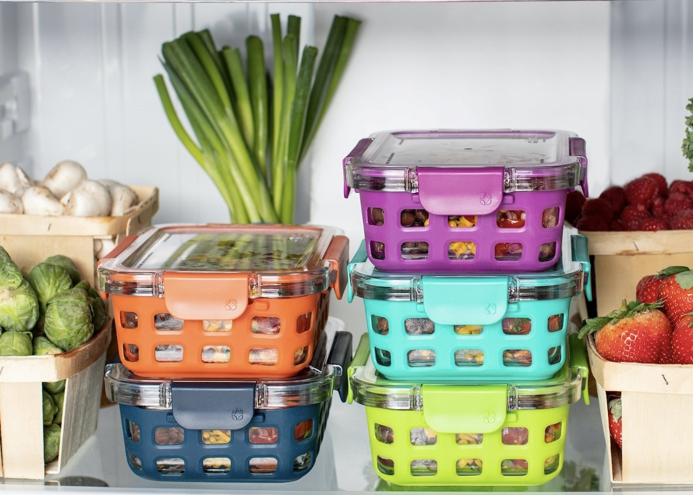

Как да съхраняваме продуктите: Съвети за правилното съхранение на различни продукти

Съхранението на хранителни продукти е ключова стъпка в кулинарията, която гарантира тяхната свежест, вкус и безопасност за консумация. Неправилното съхранение може да доведе до разваляне на храната, загуба на хранителни вещества и дори до хранителни натравяния. Тази статия ще разгледа основните принципи и съвети за правилно съхранение на различни видове храни – от пресни плодове и зеленчуци до замразени продукти и подправки.
Основни принципи на съхранение
- Контрол на температурата:
- Храните, които се развалят лесно, трябва да се съхраняват в хладилник при температура под 4°C.
- Замразените продукти трябва да се държат във фризер при -18°C или по-ниска температура.
- Разделяне на продуктите:
- Суровото месо, риба и птици трябва да се съхраняват отделно от готовите за консумация храни, за да се избегне кръстосано замърсяване.
- Използване на подходящи контейнери:
- Използвайте херметични съдове или торбички, за да предотвратите излагането на храна на въздух и влага.
- Ротация на продуктите:
- Прилагайте принципа „първо влязло, първо излязло“ (FIFO), за да използвате първо най-старите продукти.
Съхранение на продукти
| Продукт |
Оптимална температура |
Продължителност на съхранение |
| Ябълки |
Хладилник (1-4°C) |
4-6 седмици |
| Банани |
Стайна температура |
3-5 дни |
| Месо |
Хладилник (под 4°C) |
2-3 дни |
| Риба |
Хладилник (0-2°C) |
1-2 дни |
| Мляко |
Хладилник (2-4°C) |
5-7 дни |
Съхранение на зърнени и сухи храни
Брашно
- Съхранявайте в херметични контейнери, за да предпазите от влага и насекоми.
- Замразявайте пълнозърнесто брашно, за да запазите свежестта му.
Захар и сол
- Дръжте на сухо място в плътно затворени съдове.
Макарони и ориз
- Съхранявайте в херметични контейнери, далеч от пряка слънчева светлина.
Съхранение на подправки и масла
Подправки
- Дръжте в стъклени буркани на тъмно и хладно място.
- Проверявайте редовно свежестта и изхвърляйте подправки с променен вкус или мирис.
Растителни масла
- Съхранявайте зехтина на тъмно място, далеч от топлина.
- Други масла могат да се държат в хладилник, ако е посочено на етикета.
Замразяване на храни
Подготовка за замразяване
- Разделяйте храната на малки порции за по-лесно размразяване.
- Използвайте торбички за замразяване и етикетирайте всяка порция.
Размразяване
- Размразявайте храна в хладилника, а не на стайна температура, за да избегнете развитието на бактерии.
Храни, които не трябва да се замразяват
- Не замразявайте млечни продукти като йогурт или сметана, тъй като текстурата им се променя.
Чести грешки при съхранение и как да ги избегнем
Оставяне на храна на стайна температура
- Решение: Прибирайте в хладилника остатъците в рамките на два часа.
Използване на неправилни съдове
- Решение: Инвестирайте в качествени херметични контейнери.
Пренебрегване на сроковете на годност
- Решение: Организирайте редовна проверка на запасите си.
Правилното съхранение на храната е важна стъпка в кулинарията, която може да спести време, пари и да гарантира здравето на вас и вашето семейство. Спазването на съветите в тази статия ще ви помогне да запазите продуктите свежи, да избегнете загуби и да приготвяте по-вкусни ястия. Когато храната е съхранена правилно, тя не само запазва вкусовите си качества, но и приносът ви към устойчивостта на хранителните ресурси се увеличава.